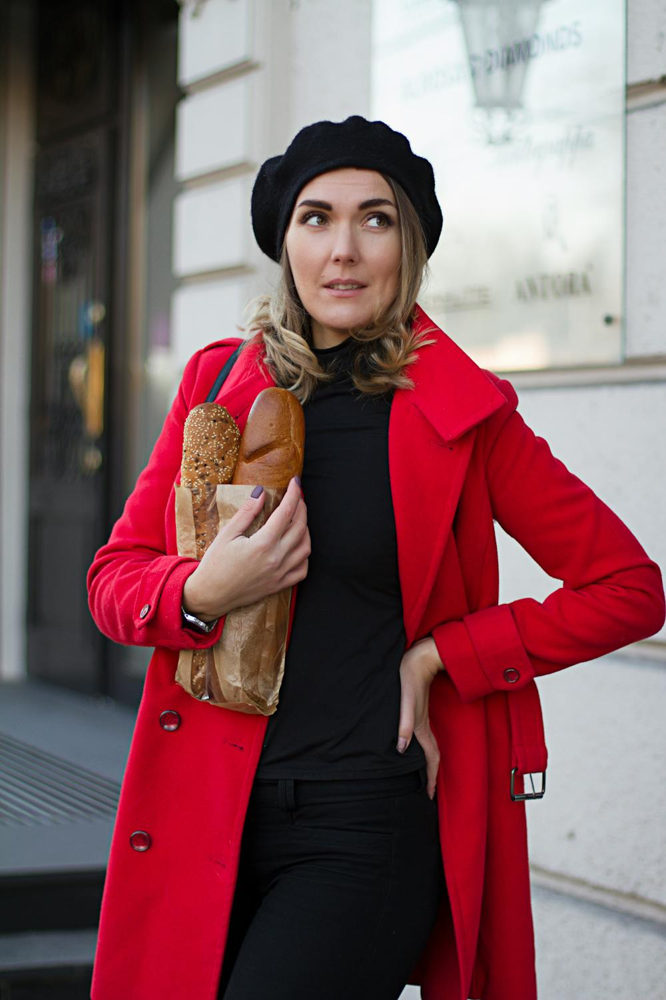
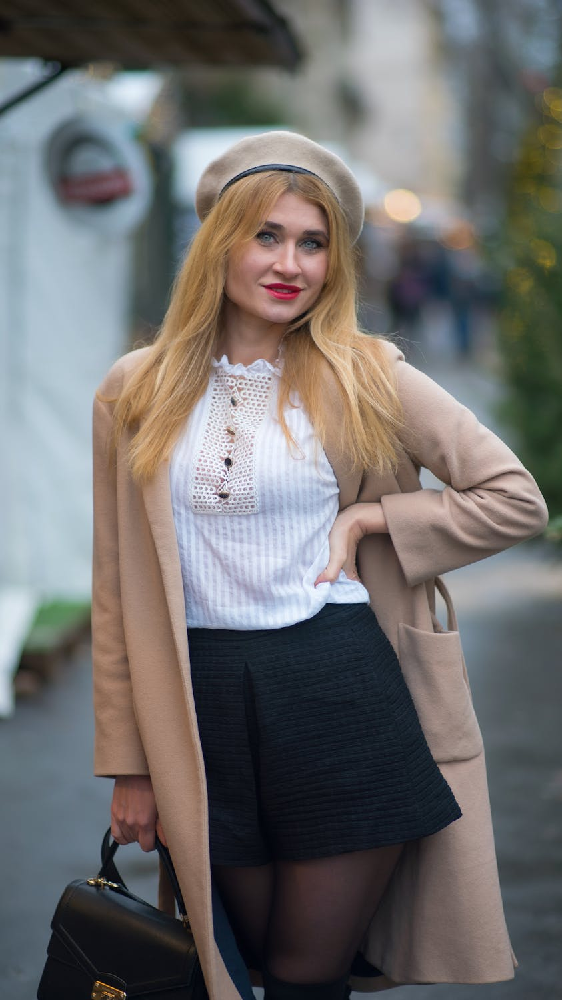
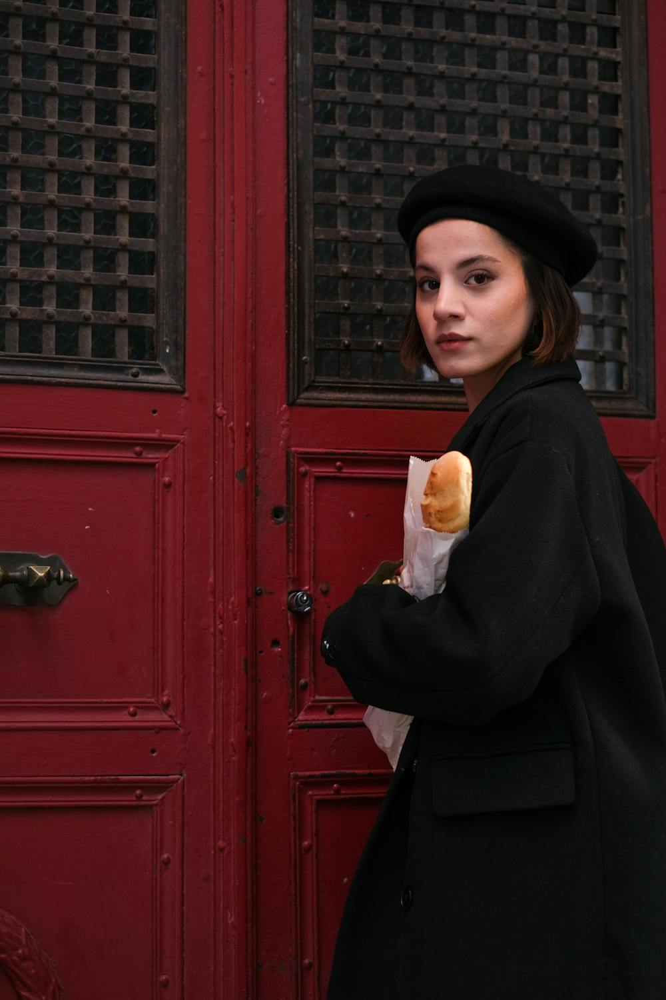
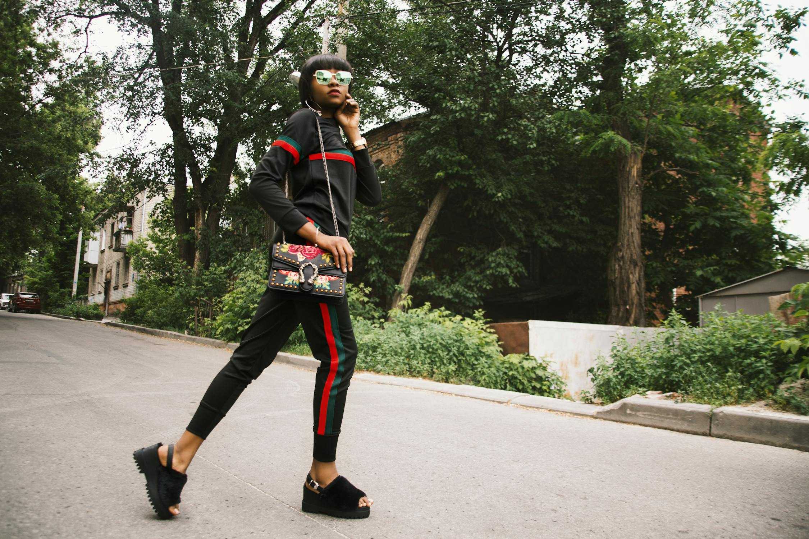
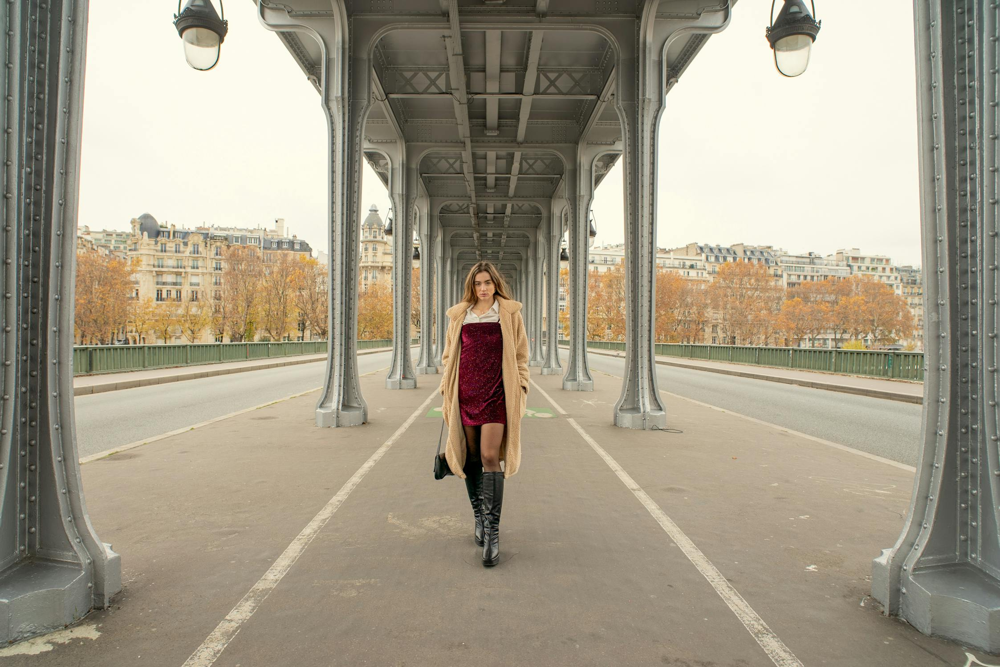
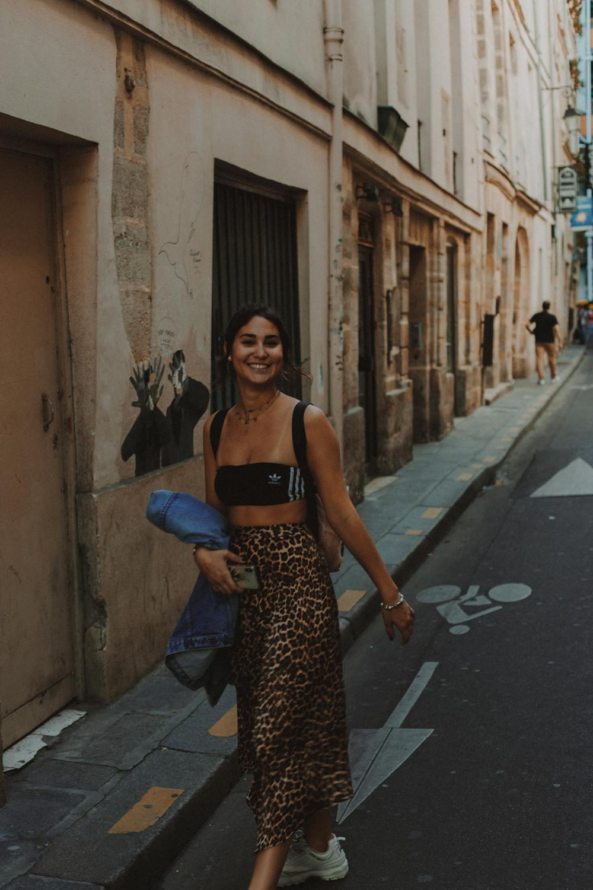

SMARTWARDROBE EDITORIAL
Powered by AI Prompt Chain Pipeline
法式慵懒的新算法：真丝吊带与羊毛西装的对冲


导语 — 抛出现象与个人感受，把读者带进这股风潮的情绪密度里。 以《法式慵懒的新算法：真丝吊带与羊毛西装的对冲》为轴心，我们需要先承认：穿衣从来不是纯粹的审美游戏，它更像一套被日常反复验证的社会语法。你选择的廓形，决定他人如何读取你的边界；你偏爱的材质肌理，暴露你对世界的信任程度；而一件衣服的垂坠感与挺括度，则把“呼吸感”或“压迫感”写在身体的第二层肌肤上。当你开始用剪裁而不是 logo 来表达立场，用留白而不是堆叠来制造张力，你会发现所谓“高级”并非昂贵，而是克制。克制不是退让，而是一种更精准的控制：控制光泽出现的时机，控制线条收束的角度，控制你在城市里行走时的节奏与重心。这就是风格的意义：不是复制，而是把生活的焦虑、欲望与野心，翻译成一套你愿意长期实践的穿搭方法。
从历史与文化的回潮谈起：它为何在此刻出现，它在反对什么。 以《法式慵懒的新算法：真丝吊带与羊毛西装的对冲》为轴心，我们需要先承认：穿衣从来不是纯粹的审美游戏，它更像一套被日常反复验证的社会语法。你选择的廓形，决定他人如何读取你的边界；你偏爱的材质肌理，暴露你对世界的信任程度；而一件衣服的垂坠感与挺括度，则把“呼吸感”或“压迫感”写在身体的第二层肌肤上。当你开始用剪裁而不是 logo 来表达立场，用留白而不是堆叠来制造张力，你会发现所谓“高级”并非昂贵，而是克制。克制不是退让，而是一种更精准的控制：控制光泽出现的时机，控制线条收束的角度，控制你在城市里行走时的节奏与重心。这就是风格的意义：不是复制，而是把生活的焦虑、欲望与野心，翻译成一套你愿意长期实践的穿搭方法。
从面料与工艺的角度拆解：触感、垂坠与挺括如何改变身体叙事。 以《法式慵懒的新算法：真丝吊带与羊毛西装的对冲》为轴心，我们需要先承认：穿衣从来不是纯粹的审美游戏，它更像一套被日常反复验证的社会语法。你选择的廓形，决定他人如何读取你的边界；你偏爱的材质肌理，暴露你对世界的信任程度；而一件衣服的垂坠感与挺括度，则把“呼吸感”或“压迫感”写在身体的第二层肌肤上。当你开始用剪裁而不是 logo 来表达立场，用留白而不是堆叠来制造张力，你会发现所谓“高级”并非昂贵，而是克制。克制不是退让，而是一种更精准的控制：控制光泽出现的时机，控制线条收束的角度，控制你在城市里行走时的节奏与重心。这就是风格的意义：不是复制，而是把生活的焦虑、欲望与野心，翻译成一套你愿意长期实践的穿搭方法。
Look 1

Look 2
Look 3
深度解析 — 从阶层与权力结构切入：谁在定义“好品味”，谁在被排除。 以《法式慵懒的新算法：真丝吊带与羊毛西装的对冲》为轴心，我们需要先承认：穿衣从来不是纯粹的审美游戏，它更像一套被日常反复验证的社会语法。你选择的廓形，决定他人如何读取你的边界；你偏爱的材质肌理，暴露你对世界的信任程度；而一件衣服的垂坠感与挺括度，则把“呼吸感”或“压迫感”写在身体的第二层肌肤上。当你开始用剪裁而不是 logo 来表达立场，用留白而不是堆叠来制造张力，你会发现所谓“高级”并非昂贵，而是克制。克制不是退让，而是一种更精准的控制：控制光泽出现的时机，控制线条收束的角度，控制你在城市里行走时的节奏与重心。这就是风格的意义：不是复制，而是把生活的焦虑、欲望与野心，翻译成一套你愿意长期实践的穿搭方法。
穿搭实操 — 给出可复用公式：上半身与下半身的比例、留白与收束。 以《法式慵懒的新算法：真丝吊带与羊毛西装的对冲》为轴心，我们需要先承认：穿衣从来不是纯粹的审美游戏，它更像一套被日常反复验证的社会语法。你选择的廓形，决定他人如何读取你的边界；你偏爱的材质肌理，暴露你对世界的信任程度；而一件衣服的垂坠感与挺括度，则把“呼吸感”或“压迫感”写在身体的第二层肌肤上。当你开始用剪裁而不是 logo 来表达立场，用留白而不是堆叠来制造张力，你会发现所谓“高级”并非昂贵，而是克制。克制不是退让，而是一种更精准的控制：控制光泽出现的时机，控制线条收束的角度，控制你在城市里行走时的节奏与重心。这就是风格的意义：不是复制，而是把生活的焦虑、欲望与野心，翻译成一套你愿意长期实践的穿搭方法。
穿搭实操 — 给出材质组合：硬与软、哑光与微光的温差对冲。 以《法式慵懒的新算法：真丝吊带与羊毛西装的对冲》为轴心，我们需要先承认：穿衣从来不是纯粹的审美游戏，它更像一套被日常反复验证的社会语法。你选择的廓形，决定他人如何读取你的边界；你偏爱的材质肌理，暴露你对世界的信任程度；而一件衣服的垂坠感与挺括度，则把“呼吸感”或“压迫感”写在身体的第二层肌肤上。当你开始用剪裁而不是 logo 来表达立场，用留白而不是堆叠来制造张力，你会发现所谓“高级”并非昂贵，而是克制。克制不是退让，而是一种更精准的控制：控制光泽出现的时机，控制线条收束的角度，控制你在城市里行走时的节奏与重心。这就是风格的意义：不是复制，而是把生活的焦虑、欲望与野心，翻译成一套你愿意长期实践的穿搭方法。
穿搭实操 — 给出配饰策略：用20%的锐利来打破80%的沉闷。 以《法式慵懒的新算法：真丝吊带与羊毛西装的对冲》为轴心，我们需要先承认：穿衣从来不是纯粹的审美游戏，它更像一套被日常反复验证的社会语法。你选择的廓形，决定他人如何读取你的边界；你偏爱的材质肌理，暴露你对世界的信任程度；而一件衣服的垂坠感与挺括度，则把“呼吸感”或“压迫感”写在身体的第二层肌肤上。当你开始用剪裁而不是 logo 来表达立场，用留白而不是堆叠来制造张力，你会发现所谓“高级”并非昂贵，而是克制。克制不是退让，而是一种更精准的控制：控制光泽出现的时机，控制线条收束的角度，控制你在城市里行走时的节奏与重心。这就是风格的意义：不是复制，而是把生活的焦虑、欲望与野心，翻译成一套你愿意长期实践的穿搭方法。

穿搭误区 — 指出最常见的失败：用力过猛、堆叠过度、忽略肩线与裤长。 以《法式慵懒的新算法：真丝吊带与羊毛西装的对冲》为轴心，我们需要先承认：穿衣从来不是纯粹的审美游戏，它更像一套被日常反复验证的社会语法。你选择的廓形，决定他人如何读取你的边界；你偏爱的材质肌理，暴露你对世界的信任程度；而一件衣服的垂坠感与挺括度，则把“呼吸感”或“压迫感”写在身体的第二层肌肤上。当你开始用剪裁而不是 logo 来表达立场，用留白而不是堆叠来制造张力，你会发现所谓“高级”并非昂贵，而是克制。克制不是退让，而是一种更精准的控制：控制光泽出现的时机，控制线条收束的角度，控制你在城市里行走时的节奏与重心。这就是风格的意义：不是复制，而是把生活的焦虑、欲望与野心，翻译成一套你愿意长期实践的穿搭方法。
结语 — 把风格收回到个人：它最终要服务的是你的生活与精神姿态。 以《法式慵懒的新算法：真丝吊带与羊毛西装的对冲》为轴心，我们需要先承认：穿衣从来不是纯粹的审美游戏，它更像一套被日常反复验证的社会语法。你选择的廓形，决定他人如何读取你的边界；你偏爱的材质肌理，暴露你对世界的信任程度；而一件衣服的垂坠感与挺括度，则把“呼吸感”或“压迫感”写在身体的第二层肌肤上。当你开始用剪裁而不是 logo 来表达立场，用留白而不是堆叠来制造张力，你会发现所谓“高级”并非昂贵，而是克制。克制不是退让，而是一种更精准的控制：控制光泽出现的时机，控制线条收束的角度，控制你在城市里行走时的节奏与重心。这就是风格的意义：不是复制，而是把生活的焦虑、欲望与野心，翻译成一套你愿意长期实践的穿搭方法。
Look 1

Look 2

Look 3
结语 — 用一句有力度的短句收尾，形成杂志式的余韵。 以《法式慵懒的新算法：真丝吊带与羊毛西装的对冲》为轴心，我们需要先承认：穿衣从来不是纯粹的审美游戏，它更像一套被日常反复验证的社会语法。你选择的廓形，决定他人如何读取你的边界；你偏爱的材质肌理，暴露你对世界的信任程度；而一件衣服的垂坠感与挺括度，则把“呼吸感”或“压迫感”写在身体的第二层肌肤上。当你开始用剪裁而不是 logo 来表达立场，用留白而不是堆叠来制造张力，你会发现所谓“高级”并非昂贵，而是克制。克制不是退让，而是一种更精准的控制：控制光泽出现的时机，控制线条收束的角度，控制你在城市里行走时的节奏与重心。这就是风格的意义：不是复制，而是把生活的焦虑、欲望与野心，翻译成一套你愿意长期实践的穿搭方法。